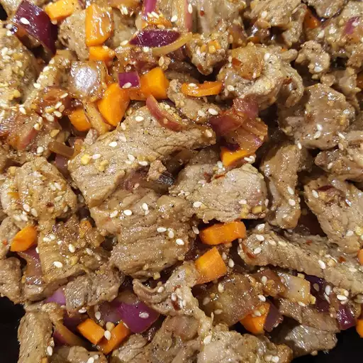

Asian Fire Meat

Description
This is a spicy meat dish that is popular in many Asian countries. It is made with a variety of spices and herbs,
and is often served with rice or noodles.
The dish is typically made with beef, pork, or chicken, and is cooked in a wok or large skillet. The meat is
marinated in a mixture of soy sauce, garlic, ginger, and chili peppers, and then stir-fried with vegetables such
as bell peppers, onions, and carrots.
Ingredients
- ½ cup soy sauce
- 1 tablespoon sesame oil
- 2 tablespoons brown sugar
- 3 cloves garlic, crushed
- 1 large red onion, chopped
- ground black pepper to taste
- 1 teaspoon red pepper flakes
- 2 tablespoons sesame seeds
- 2 leeks, chopped
- 1 small carrot, chopped
- 1 pound beef round steak, sliced paper thin
Steps
- In a large bowl, mix together the soy sauce, sesame oil, brown sugar, garlic, and red onion. Stir in the
black pepper, red pepper flakes, sesame seeds, leeks and carrot. Mix in the meat by hand to ensure even
coating. Cover and let marinate for at least 2 hours or overnight.
- Brush the bottom half of a wok with cooking oil, and heat over medium-high heat. Put in all of the meat and
marinade at once, and cook stirring constantly. The meat will be cooked after just a few minutes. Remove
from heat and serve with rice or noodles. For Korean-style fire meat, roll the meat mixture up in a leaf of
red lettuce.
Home
More Meat Recipes